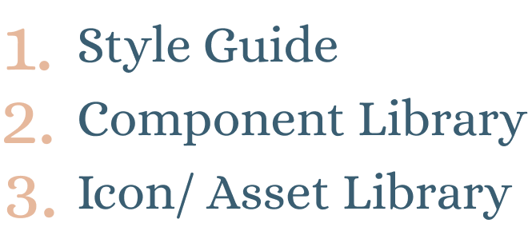
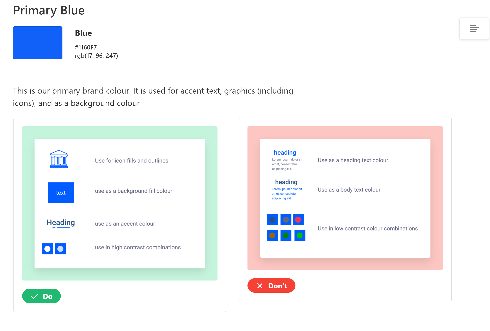
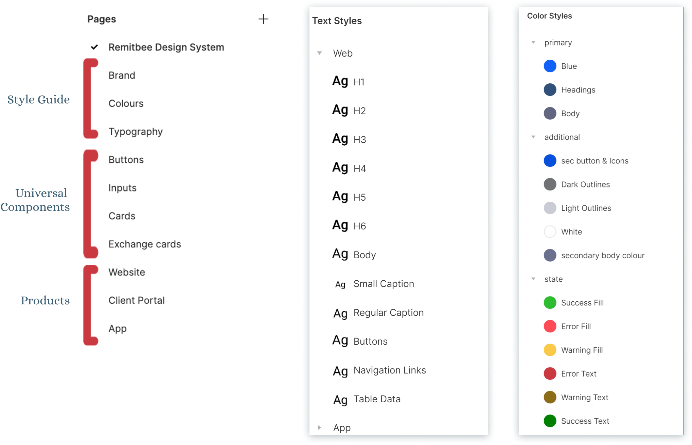
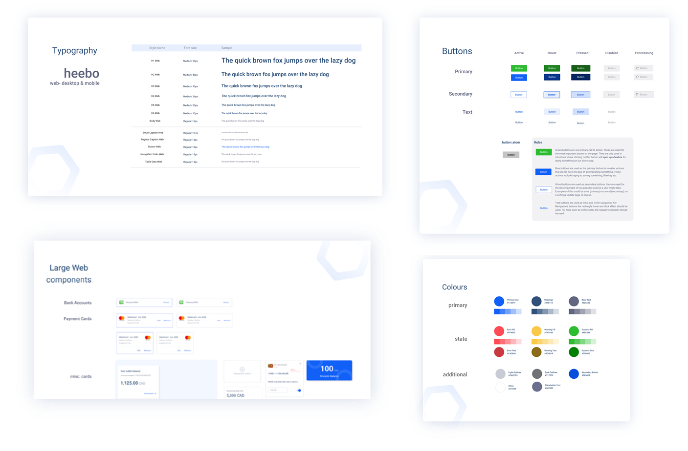
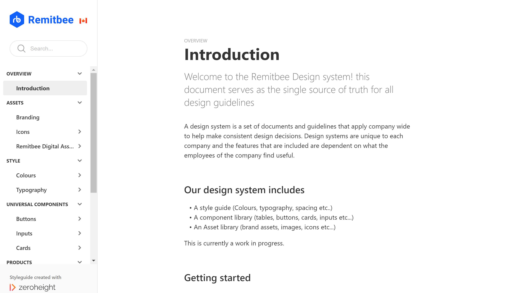

Honeycomb Design System
(under construction)
Component Library
UI Design
Interaction Design
The challenge
To create infastructure that will help prevent design debt, unify the divide between teams and open
up more time to improve the usability of the products
My role
Lead Designer
The Team
2 Designers, PM, Development team
Duration
September 2020 - December 2020
A little bit of a different onboarding...
When I started my internship at Remitbee, I realized fairly quickly
that the company lacked a lot of the design infrastructure that I was familiar with seeing at other companies.
Usually the onboarding process would begin with me becoming familiar with the design methods that the company used,
and going over documentation and project files. This was not the case over here.
The company had released Remitbee 2.0 a few months prior, and up until this point the design department was a 1 man team.
Admittedly, he had done a great job at improving the product and as a result the company had started to grow at a rapid rate.
This however meant that
The focus of the company was shifting from creating a brand new product to maintaining,
and improving their current one
How bad was it exactly?
During the process of becoming familiar with all the brand products and designed files,
I notice 4 major issues.

Each of these issues seemed to go back to 2 common themes a lack of organization, and a lack of communication
My proposed solution?
This seemed like a perfect opportunity to introduce a design system to the company.
With my past experience working with them, I believed that this would help the company estabilis a strong brand identity,
and make our design process overall much more streamlined
With that said, I pitched the idea to my supervisors and was given the go ahead to begin
Taking inventory
My first course of action was to take inventory of what we had and document any inconsistencies.
I began by setting up a Figma file and started to dump all the design data that we had in one spot.
I started with the typography and colours, documenting where I saw each one being used.
Next, i began to put in all the components that we used. The biggest source of inconsistency i found were our tables,
where we had multiple versions of the same design. In the end the file spanned multiple pages,
with me making a meager attempt at organizing them in a way that sort of made sense

An organized system is not the same as a usable one
From experience, I knew that it was one thing to have all your design assets organized, a
nd completely different thing to have a system that truly made your process more efficient. There were a few ideas I began to explore to help us.
To be able to make a useful design system, I had to understand what the users thought and how they used the design files
I knew that my target audience for this wasn’t just me and the senior designer. The company hired co-ops regularly
so I had to keep in mind that a new designer would be coming in every few months and would have to help maintain the system.
Figma’s style library feature seemed like it would become particularly handy, especially for colours, typography, and shadows.
I wanted designers to be able to click into existing styles and find exactly what they needed. As for the component library,
I had to make sure they would be easily accessible from the components tab. With how many we had, it was important that the naming
convention was clear, and that designers would be able to find items if they searched for them.
In addition to the designers, I also wanted to understand how I could design it so that it prevented misunderstandings between
the development and design teams. After some research and multiple interviews with the dev team, I learned that the majority of
them had view only access of the files, that they usually did not click through layers to find colours, and that they could not
always see the spacing between objects, to save time the usually either eyeballed it. Furthermore, if the design did not clearly
show all the states of a certain element, they would default to google material design.
How others did it
With how essential design systems seem to be becoming, there were plenty of examples for me to look through,
and get an understanding of the best way to organize our assets. Shopify’s Polaris, IBM’s Carbon, Google’s Material
design were a few that I believe are very well known as comprehensive design systems. However I do think its important
to note that
Our use case is not their use case.

And their design systems need to factor in external users/brands, whereas ours does not
Another point I noted while looking through these systems was that their style library, and component library were usually 2 different things.
The style library contained guidelines, rules, colours and typography while the components used those styles to make bigger pieces.
For these larger companies, each component was available in a both a code library, as well as a visual component on Sketch or Figma.
To aim for all of those elements as a first round for developing the design system seemed far too ambitious, these design systems had been
curated over multiple years and were living, breathing documents that were regularly updated.
Finally, I referenced the holy grail of design system basics : Atomic Design by Brad Frost. I used this to get an idea of how to break down
our existing components into small pieces. Items such as status badges, and progress indicators were used in multiple locations, and depending
on the platform (app vs web) these components looked slightly different but still had the same base.
After conducting my research I determined that our design system would begin with 3 major parts:

Putting it all together
Now that I had a clearer idea of what I wanted to do it was time to build it. My main goal was to ensure that the system remain as usable as possible.
Reflecting back on the original problem: I needed to create a system that would help us work more efficiently and improve communication.
Keeping that into consideration, one of the most important things that I ensured I added were use cases for things such as colours, buttons,
and input fields. It was crucial that there was no ambiguity here, because these parts are really the foundation for all of our designs. For example,
the each colour was labeled so that it's clear what its used for.

Additionally, with each colour there is a clear do and don’t for when the colour is appropriate. This is to ensure that regardless
of what your role in the company is, you can independently use the branding colours appropriately, and ensure that the products
you are creating will be legible, and appealing to the eye.
After that I sorted the components we had into their places. The overall structure of the files was the style guide first,
then universal components which were shared between all of our products, and then a component library that was organized by product.
The style guide and universal components had use cases and rules associated with them and were smaller pages so that the user would be
able to read through all the content in one glance. The product pages on the other hand were created as more of a reference guide that
will allow the user to find the component they’re looking for and either copy and paste it or use it to build the component in code.
Finally, I used Figma’s organization system to ensure that the designers (current and future) would have easy access to all the components
for future designs. The styles were categorized based off use case, and then each specific style was labelled so that it was understood
where it was used.

The end result was something that looked like this

Closing Thoughts
Creating this design taught me a lot about how internal members of the company are often users too, and it was a fascinating experience to
create a tool that would not only be used by my coworkers, but would also help shape the companies team dynamics, and design methodologies
for the future. The creation of this system solidified the brand identity of the team and ensured that each member was 100% committed
to the design ideologies we stood by.
Over the 1 month of my internship where the design system was in a usable state, it
became an integral part of everyone’s day to day lives.I closed off on this
project by creating a document on Zero height – a design system manager, and set up the outline so that in the future coded components
could be added to it. I also included tutorials, and links to design resources. Between these two documents, the design system was ready to be used

My recommendation for next steps with this system are to conduct user
tests and observe how the system is used in practice. Not all future designers that use it will have the same workflow
that me and the senior designer did, so it’s important that the system changes along with the employees. It is also planned for the near future to add in React components
which will be included in ZeroHeight.
Designed and Developed with love by Maheen Adhami 2021